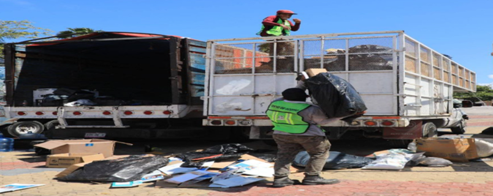
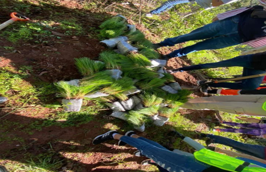
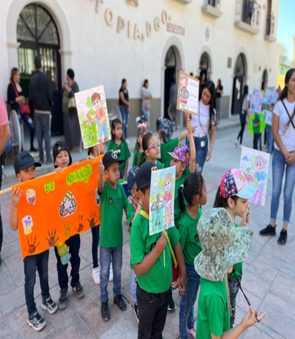
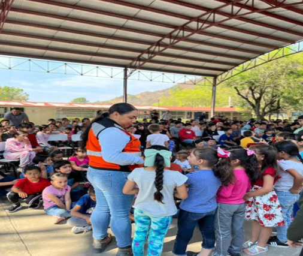
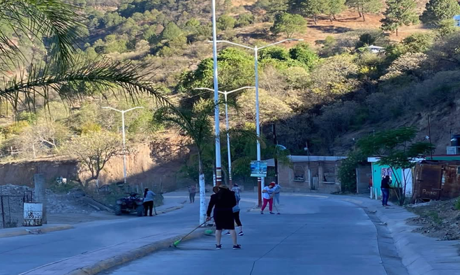
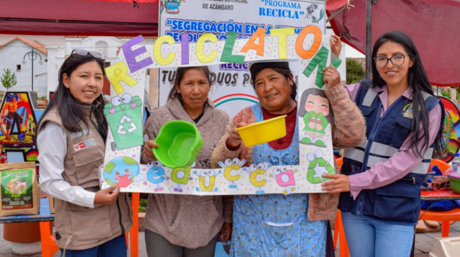
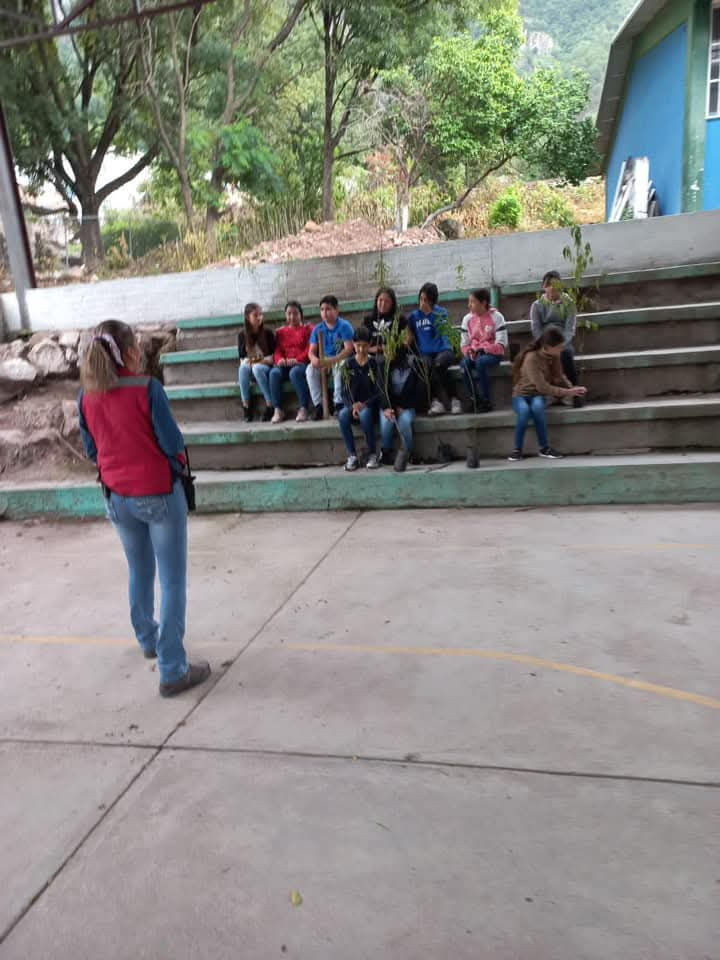

Soluciones para la Contaminación
Consejos para Reducir la Contaminación
- *Evita la quema de basura.
- *Educación y conciencia .
- *No tires basura en la calle.
- *Participa en actividades de limpieza.
- *No usar fertilizantes .
- *Reduce, reutiliza y recicla.
- *Conserva el agua.
- *Usa energías renovables.
- *Crear áreas verdes.
- *Implementar sistemas de tratamiento de agua.

Proyectos e Iniciativas Locales
En Topia, diversas organizaciones trabajan en la mejora del medio ambiente. Participa en actividades como:
-
Reforestación de áreas verdes.

-
Charlas de concienciación ambiental.

-
Programas de reducción de residuos en escuelas.

Campañas de Limpieza y Reciclaje
Únete a las campañas locales para mantener nuestra comunidad libre de contaminación.
-
Día de limpieza: Recogida de basura en espacios públicos.

-
Reciclatón: Entrega de materiales reciclables en puntos designados.

-
Educación ambiental: Talleres y conferencias sobre sostenibilidad.
